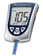
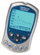

| Meter | Multisite | Sample Size | Test Time | Memory | Strips | Software | |
| Freestyle |  |
Yes | 0.3 microliters | 7 secs | 250 test | Freestyles -  |
Yes |
| Flash |  |
Yes | 0.3 microliters | 7 secs | 250 test | Freestyles - |
Yes |
| Freedom |  |
Yes | 0.3 microliters | 5 secs | 250 test | Freestyles - |
Yes |
| Lite |  |
Yes | 0.3 microliters | 5 secs | 400 test | Freestyle Lite | Yes |
| Precision Xtra (glucose & ketone) |
 | Yes | 0.6 microliters | 5 secs | 450 events | Precision Xtra - |
Yes |
| Meter | Multisite | Sample Size | Test Time | Memory | Strips | Software | |
| Ascensia Breeze |
 |
Yes | 3.0 microliters | 30 secs | 100 test | Autodisc -  |
Yes |
| Ascensia Breeze2 |
 |
Yes | 1.0 microliters | 5 secs | 420 test | Autodisc or Breeze2 - |
Yes |
| Ascensia Contour |
Yes | 0.6 microliters | 5 secs | 480 test | Contour - |
Yes | |
| Ascensia Elite & Elite XL |
 |
Yes | 3.0 microliters | 30 secs | 120 test | Elite - |
Yes |
| Meter | Multisite | Sample Size | Test Time | Memory | Strips | Software | |
| Advocate |  |
Yes | 0.7 microliters | 7 secs | 450 test | Advocate Strips | Yes |
| Advocate Duo | Yes | 0.7 microliters | 7 secs | 450 test | Advocate Strips | Yes | |
| Advocate RediCode |  |
Yes | 0.7 microliters | 7 secs | 450 test | Advocate Strips | Yes |
| Meter | Multisite | Sample Size | Test Time | Memory | Strips | Software | |
| Prodigy® Advance Meter | Yes | 0.6 microliters | 6 secs | 450 test | Prodigy® Personal Strips | Yes | |
| Prodigy® Audio Meter | No | 0.6 microliters | 6 secs | 450 test | Prodigy® Personal Strips | Yes | |
| Prodigy® Autocode Meter | No | 0.6 microliters | 6 secs | 450 test | Autocode Strips | Yes | |
| Prodigy® Duo Meter |  |
Yes | 0.6 microliters | 6 secs | 450 test | Duo Strips | Yes |
| Prodigy® Eject Meter |  |
Yes | 0.6 microliters | 6 secs | 450 test | Eject Strips | Yes |
| Prodigy® Voice Meter |  |
Yes | 0.6 microliters | 6 secs | 450 test | Prodigy® Personal Strips | Yes |
Arkray USA (formerly Hypoguard)
| Meter | Multisite | Sample Size | Test Time | Memory | Strips | Software | |
| Advance Microdraw® |  |
No | 1.5 microliters | 15 secs | 250 test | Advance Test Strips - |
Yes |
| Advance Intuition® |  |
No | 3.0 microliters | 10 secs | 10 test | Advance Intutition | Yes |
| Assure II | -- | 3.0 microliters | 30 secs | -- | Assure II Test Strips | -- | |
| Assure 3 | |
-- | 3.0 microliters | 10 secs | -- | Assure 3 Test Strips | -- |
| Assure 4 |  |
-- | 1.5 microliters | 10 secs | 50 test | Assure 4 Test Strips | -- |
| Assure Pro | -- | 1.0 microliters | 10 secs | 250 test | Assure Pro Test Strips | -- | |
| PocketChem EZ | -- | 1.0 microliters | 10 secs | 250 test | PocketChem EZ Test Strips | -- | |
| Quicktek® |  |
No | 3.5 microliters | 15 secs | 250 test | Quicktek Test Strips - |
Yes |
| Supreme Plus® |  |
No | ----- | 30-60 secs | 70 test | Supreme Plus Test Strips | No |
| Meter | Multisite | Sample Size | Test Time | Memory | Strips | Software | |
| GlucoPack | No | 3 microliters | 9 secs | uploaded | GlucoPack Blood Test Strips | Yes | |
| Meter | Multisite | Sample Size | Test Time | Memory | Strips | Software | |
| Prestige IQ |  |
No | 4.0 microliters | 10 - 50 secs | 365 test | Prestige Smart System | Yes |
| Sidekick |  |
Yes | 1.0 microliters | 10 secs | 50 test | Sidekick Test Strips | No |
| TRUEread |  |
Yes | 4.0 microliters | 10 secs | 200 test | TRUEread Test Strips | Yes |
| TrueTrack |  |
Yes | 1.0 microliters | 10 secs | 365 test | TrueTrack Smart System | Yes |
| Meter | Multisite | Sample Size | Test Time | Memory | Strips | Software | |
| OneTouch Basic |
No | 10.0 microliters | 45 secs | 75 test | Basics - |
Yes | |
| OneTouch FastTake |
No | 1.5 microliters | 15 secs | 150 test | FastTakes | Yes | |
| OneTouch SureStep |
 |
No | 10.0 microliters | 15 secs | 150 test | SureSteps | Yes |
| OneTouch Ultra |
 |
Yes | 1.0 microliters | 5 secs | 150 test | Ultras - |
Yes |
| OneTouch Ultra2 |
|
Yes | 1.0 microliters | 5 secs | 500 test | Ultras - |
Yes |
| OneTouch UltraMini |
Yes | 1.0 microliters | 5 secs | 50 test | Ultras - |
No | |
| OneTouch UltraSmart |
 | Yes | 1.0 microliters | 5 secs | 3000 test | Ultras - |
Yes |
| Meter | Multisite | Sample Size | Test Time | Memory | Strips | Software | |
| Nova Max |  |
Yes | 0.3 microliters | 5 secs | 400 test | NovaMax | |
| Meter | Multisite | Sample Size | Test Time | Memory | Strips | Software | |
| Accu Check Active |
 |
Yes | 1.0 microliters | 5 secs | 200 test | Active | Yes |
| Accu Check Advantage |
No | 4.0 microliters | 26 secs | 480 test | Comfort Curve - |
Yes | |
| Accu Check Aviva |
 |
Yes | 0.6 microliters | 5 secs | 500 test | Aviva- |
Yes |
| Accu Check Compact |
|
Yes | 1.5 microliters | 8 secs | 100 test | Compact Drum - |
Yes |
| Accu Check Compact Plus |
 |
Yes | 1.5 microliters | 5 secs | 300 test | Compact Drum - |
Yes |
Sanvita (BD Diabetes Glucose Monitoring Products)
| Meter | Multisite | Sample Size | Test Time | Memory | Strips | Software | |
| Logic | No | 0.3 microliters | 5 secs | 250 test | BD Test Strips | Yes | |
| Link | No | 0.3 microliters | 5 secs | 250 test | BD Test Strips | Yes | |
| Meter | Multisite | Sample Size | Test Time | Memory | Strips | Software | |
| Control AST |  |
Yes | 1.0 microliters | 5 secs | 250 test | Control Test Strips | Yes |
| EasyGluco | Yes | 1.0 microliters | 9 secs | 200 test | EasyGluco Test Strips | Yes | |
| EasyGluco G2 |  |
Yes | 1.0 microliters | 9 secs | 200 test | EasyGluco Test Strips | Yes |
| Meter | Multisite | Sample Size | Test Time | Memory | Strips | Software | |
| Keynote |  |
Yes | 0.5 microliters | 4 secs | 300 test | Keynote Test Strips | Yes |